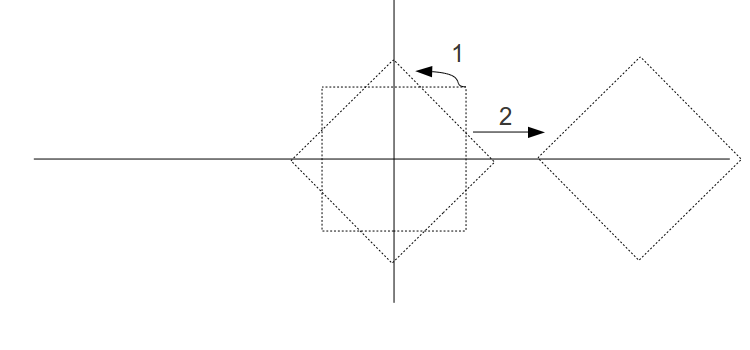
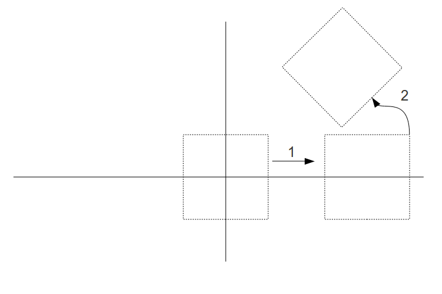

Background
In the last few tutorials we have developed several transformations that give us the flexibility of moving an object anywhere in the 3D world. We still have a couple more to learn (camera control and perspective projection) but as you probably already guessed, a combination of the transformation is required. In most cases you will want to scale the object to fit your 3D world, rotate it into the required orientation, move it somewhere, etc. Up till now we have been exercising a single transformation at a time. In order to perform the above series of transformations we need to multiply the first transformation matrix by the vertex position and then multiple the next transformation by the result of the previous multiplication. This goes on until all the transformation matrices have been applied on the vertex. One trivial way to do that is to supply each and every transformation matrix to the shader and let it do all the multiplications. This, however, is very inefficient since the matrices are the same for all vertices and only vertex position changes. Luckily, linear algebra provides a set of rules that make our life easier. It tells us that given a set of matrices M0...Mn and a vector V the following holds true:
Mn * Mn-1 * ... * M0 * V = (Mn* Mn-1 * ... * M0) * V
So if you calculate:
N = Mn * Mn-1 * ... * M0
Then:
Mn * Mn-1 * ... * M0 * V = N * V
This means that we can calculate N once and then send it to the shader as a uniform variable where it will be multiplied in each vertex. This will require the GPU one matrix/vector multiplication per vertex.
How do you order the matrices when generating N? The first thing you need to remember is that the vector is initially multiplied by the matrix on the far right of the series (in our case - M0). Then the vector is transformed by each matrix as we travel from the right hand side to the left hand side. In 3D graphics you usually want to scale the object first, then rotate it, then translate it, then apply camera transformation and finally project it to 2D. Let's see what happens when you rotate first and then translate:
Now see what happens when you translate first and then rotate:
As you can see, it is very diffcult to set the object position in the world when you translate it first because if you move it away from the origin and then rotate it goes around the origin which actually means that you translate it again. This second translation is something you want to avoid. By rotating first and then translate you disconnect the dependency between the two operations. This is why it is always best to model around the origin as symmetrically as possible. That way when you later scale or rotate there is no side effect and the rotated or scaled object remains symmetrical as before.
Now that we are starting to handle more than one transformation in the demos we have to drop the habit of updating the matrix directly in the render function. This method doesn't scale well and is prone to errors. Instead, the pipeline class is introduced. This class hides the fine details of matrix manipulation under a simple API to change the translation, rotation, etc. After setting all the parameters inside it you simply extract the final matrix that combines all the transformation. This matrix can be fed directly into the shader.
Source walkthru
#define ToRadian(x) ((x) * M_PI / 180.0f)
#define ToDegree(x) ((x) * 180.0f / M_PI)
We are starting to use the actual values of angles in this tutorials. As it happens, the trigonometric functions of the standard C library take radian as a parameter. The above macros take the angle either in radians or degrees and convert to the other notation.
inline Matrix4f operator*(const Matrix4f& Right) const
{
Matrix4f Ret;
for (unsigned int i = 0 ; i < 4 ; i++) {
for (unsigned int j = 0 ; j < 4 ; j++) {
Ret.m[i][j] = m[i][0] * Right.m[0][j] +
m[i][1] * Right.m[1][j] +
m[i][2] * Right.m[2][j] +
m[i][3] * Right.m[3][j];
}
}
return Ret;
}
This handy operator of the matrix class handles matrix multiplication. As you can see, each entry in the resulting matrix is defined as the dot product of its line in the left matrix with the column in the right matrix. This operator is key in the implementation of the pipeline class.
class Pipeline
{
public:
Pipeline() { ... }
void Scale(float ScaleX, float ScaleY, float ScaleZ) { ... }
void WorldPos(float x, float y, float z) { ... }
void Rotate(float RotateX, float RotateY, float RotateZ) { ... }
const Matrix4f* GetTrans();
private:
Vector3f m_scale;
Vector3f m_worldPos;
Vector3f m_rotateInfo;
Matrix4f m_transformation;
};
The pipeline class abstracts the details of getting all the transformation required for one single object combined. There are currently 3 private member vectors that store the scaling, position in world space and rotation for each axis. In addition there are APIs to set them and a function to get the matrix that represent the sum of all these transformations.
const Matrix4f* Pipeline::GetTrans()
{
Matrix4f ScaleTrans, RotateTrans, TranslationTrans;
InitScaleTransform(ScaleTrans);
InitRotateTransform(RotateTrans);
InitTranslationTransform(TranslationTrans);
m_transformation = TranslationTrans * RotateTrans * ScaleTrans;
return &m_transformation;
}
This function initializes three seperate matrices as the transformations that match the current configuration. It multiplies them one by one and returns the final product. Note that the order is hard coded and follows the description above. If you need some flexibility there you can use a bitmask that specifies the order. Also note that it always stores the final transformation as a member. You can try optimizing this function by checking a dirty flag and returning the stored martix in the case that there was no change in configuration since the last time this function was called.
This function uses private methods to generate the different transformations according to what we've learned in the last few tutorials. In the next tutorials this class will be extended to handle camera control and perspective projection.
Pipeline p;
p.Scale(sinf(Scale * 0.1f), sinf(Scale * 0.1f), sinf(Scale * 0.1f));
p.WorldPos(sinf(Scale), 0.0f, 0.0f);
p.Rotate(sinf(Scale) * 90.0f, sinf(Scale) * 90.0f, sinf(Scale) * 90.0f);
glUniformMatrix4fv(gWorldLocation, 1, GL_TRUE, (const GLfloat*)p.GetTrans());
These are the changes to the render function. We allocate a pipeline object, configure it and send the resulting transformation down to the shader. Play with the parameters and see their effect on the final image.
For more information on this subject check out the following video tutorial by Frahaan Hussain.
Next tutorial